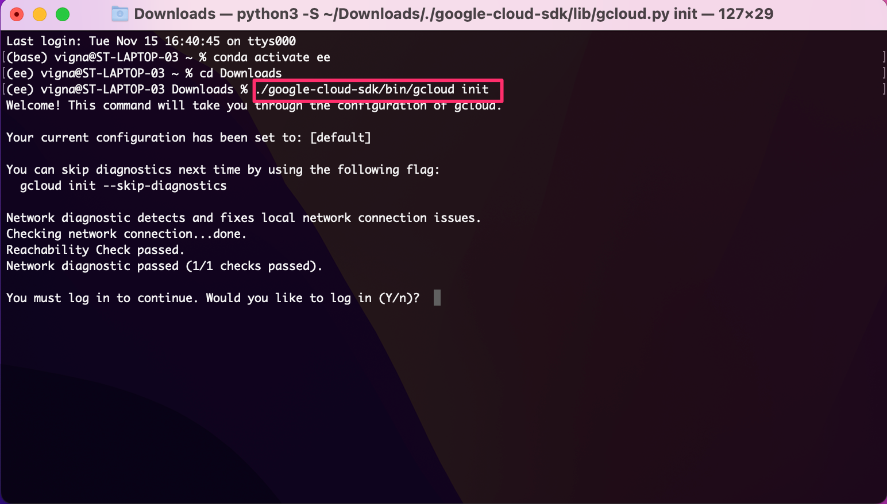
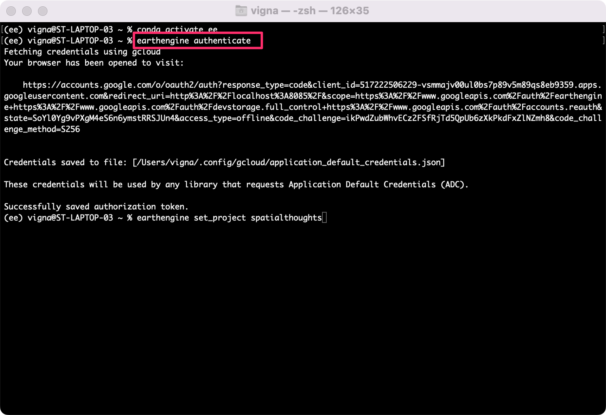
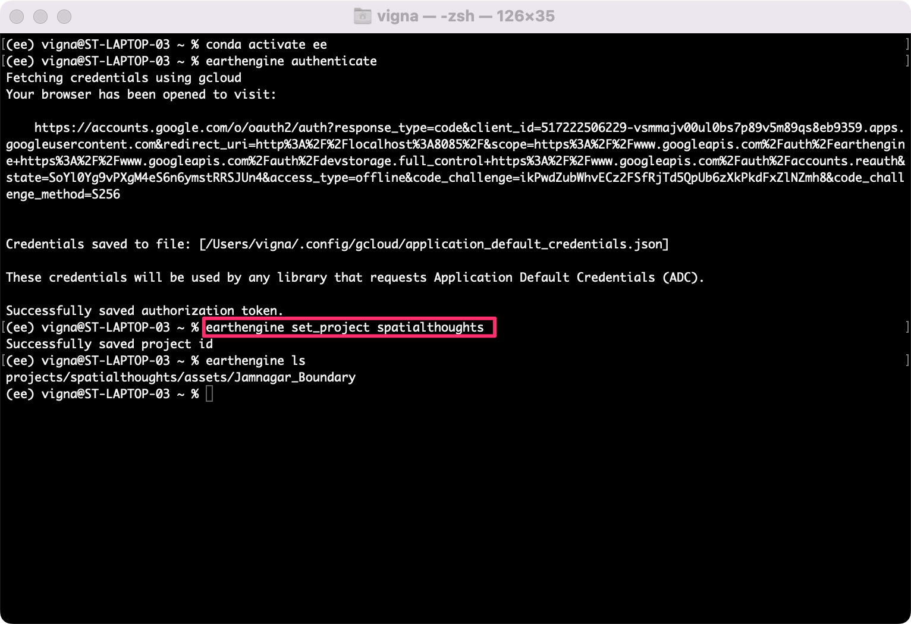

Install Google Earth Engine Python API
A Step-by-step guide for installing Gthe oogle Earth Engine Python API via Conda
1. Install Earth Engine API
The preferred method for installing the Earth Engine Python API is via Anaconda.
- Download the Anaconda Installer for Python 3.7 (or a higher version) for your operating system. Once downloaded, double click the installer and install it into the default suggested directory. Select an install for Just Me and use default settings. Note: If your username has spaces, or non-English characters, it causes problems. In that case, you can install it to a path such as
C:\anaconda.

- (Windows users) Once installed, search for Anaconda Prompt launch it. (Mac/Linux users): Launch a Terminal window.

- Once the prompt launches, it will be in the base environment. It is a good practice to install new packages in a separate environment. We will new create a new environment to install Earth Engine related packages. Enter the below code to create a new environment called ee.
Note: You can use the shortcut Shift + Insert to paste commands in Anaconda Prompt.
conda create --name ee
- Anaconda will validate the conda commands and before proceeding will ask for confirmation, press y, and enter to confirm.

- Once the environment is created the Executing transaction: done message will be displayed, if the execution is not successful, it will be marked as failed with an error message. Enter the code to activate the environment.
conda activate ee
- Now the
(base)will be replaced with(ee)indicating the environment is activated, now libraries in this environment will not affect the base environment. Also, these libraries can be used only in this environment cannot be accessed from the base or other environments.

- Now, the earthengine-api library can be installed using the conda-forge enter the below code, anaconda prompt will ask for confirmation, press y and Enter to install the library.
conda install -c conda-forge earthengine-api
- On successful installation Executing transaction: done will be displayed, enter the below code to install geemap library.
conda install -c conda-forge geemap
- Once the library installs successfully, enter the below code to install
jupyter lab, it is a browser-based user interface that can be used for executing python commands in a notebook format file.
conda install -c conda-forge jupyterlab
- On successful installation Executing transaction: done will be displayed. To launch it enter the below code and click enter.
jupyter lab
- A new browser tab will open with an instance of JupterLab. Click the Python 3 button under Notebooks.
Note: Do not close the Anaconda prompt as the jupyter server is running using this connection, which will be interrupted if the prompt is closed.

- Enter the below code and click the Run button, if the execution is successful all the libraries and their dependencies are installed successfully.
import ee
import geemap
2. Install Google Cloud CLI
Google Earth Engine uses Google Cloud for authentication. You must also install and initialize the Google Cloud Command-Line Tool (CLI) gcloud before you can activate the Earth Engine API.
- Visit the gcloud CLI installation guide. Select your operating system to see the installation instructions.

- Once installed, follow the instructions to configure the gcloud CLI. The instructions will guide you how to run the
gcloud initcommand.

- You’ll be asked to select a Google Cloud Project. Select the project that you use with Google Earth Engine. You can visit the Google Cloud Console to see the available project names.

Your Google Cloud CLI is now installed and configured.
3. Authentication
To run Python scripts locally using the ee module, you must complete a one-time authentication using the steps below. Once you complete the authentication flow, a token is permanently saved on the machine and will be used by the API automatically. This should be done only once on your machine.
- Launch a terminal and activate the environment where you have installed the
earthengine-apipackage. If you haven’t created an environment yet, refer to our installation guide.
conda activate ee
- Earth Engine API comes with a Command Line Interface (CLI) in form of the
earthenginecommand. Run the command to check if it is successfully installed.
earthengine
- If the installation is correct, you should get a summary of available commands in the earth engine. If you get an error, follow the steps in our installation guide.

- Let’s authenticate the client library by running the
authenticatecommand. This command will use gcloud to generate a URL to complete the authentication flow. Complete the sign-in flow in your browser. Once done, you will receive a success message.
earthengine authenticate
- Lastly, you must select the Google Cloud project that you need to use with the Earth Engine API. Visit the Google Cloud Console to see the available project names. Run the following command and replace the
<project_name>with your project name.
earthengine set_project <project_name>
Now your environment is ready to run Python scripts that use the Google Earth Engine API.